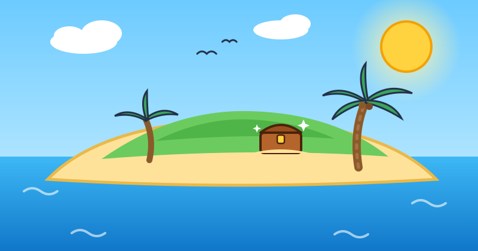
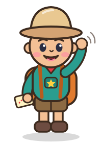
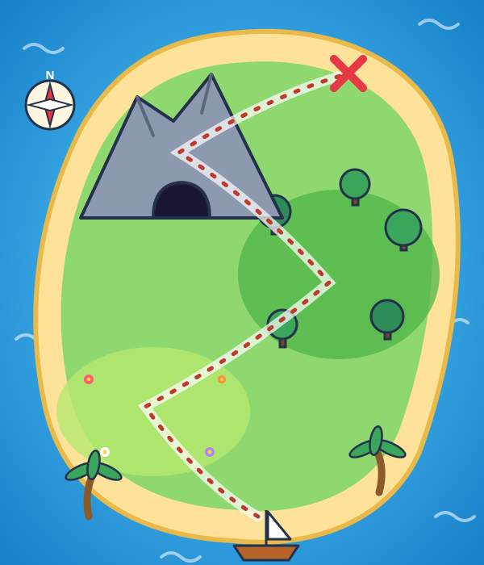
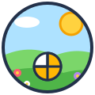
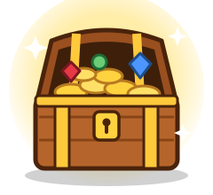

Escolha uma alternativa e confirme:


A Ilha das Frações
Um tesouro está escondido nesta ilha! Ajude o pequeno explorador a atravessar a pradaria, a floresta e a caverna resolvendo desafios de frações.
🔒 O progresso fica salvo apenas neste dispositivo. Nenhum dado pessoal é coletado.
Como jogar
- No mapa, escolha a região liberada.
- Leia a pergunta, observe a figura e selecione uma alternativa.
- Clique em Confirmar resposta para conferir se acertou.
- Acertou de primeira? 1 estrela e 10 pontos! Acertou depois? Meia estrela e 5 pontos.
- Errou? Sem problema! Leia a dica, escolha outra opção e confirme de novo.
- O jogo salva sozinho. Você pode continuar depois.
⌨️ No computador, use as teclas 1 a 4 (ou A a D) para selecionar e Enter para confirmar ou avançar.
Mapa da Aventura
0/12 estrelas
0 pontos

0/12 estrelas
0 pontos
Questão 1 de 4

Parabéns! Você concluiu esta fase!
- Estrelas na fase
- 0
- Pontos na fase
- 0
- Acertos de primeira
- 0

O Tesouro Matemático!
- Pontuação total
- 0 / 120
- Estrelas
- 0 / 12
| Região | Pontos | Estrelas | De primeira |
|---|